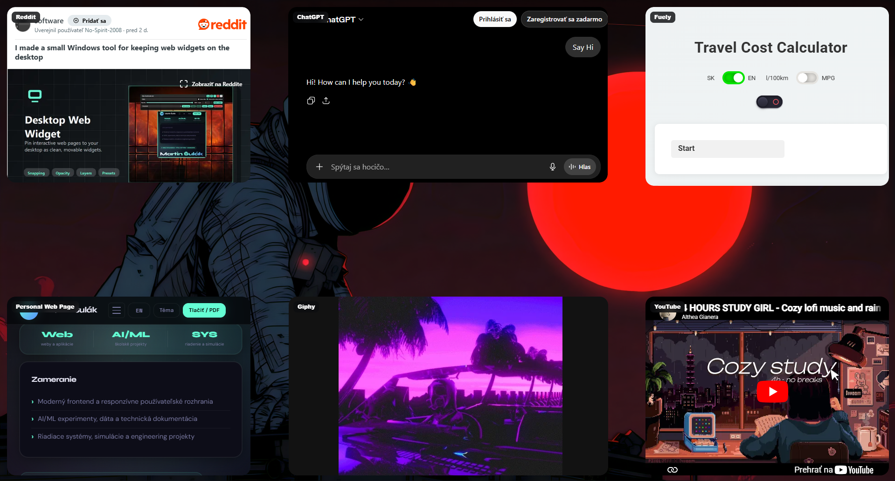

Spatial arrangement01
Snap into a layout that feels intentional.
Align widgets to screen edges, center lines, and each other with monitor-wide precision guides.
Pin the live pages you care about directly to Windows. Arrange dashboards, market data, notes, media, and monitoring tools into one focused spatial workspace.

Every control exists to help you build a calmer information layer around the work already on your screen.
Align widgets to screen edges, center lines, and each other with monitor-wide precision guides.
Browse, click, watch, monitor, and interact with live pages directly from your desktop.
Tune opacity and layer order so widgets support your work instead of competing with it.
Save, load, import, and export complete layouts for different projects, moods, or monitor setups.
Hide every control while keeping the content interactive.
Build the exact desktop layer your work needs today, then swap it for another in seconds.
Keep BTC, ETH, exchange pages, and market charts visible without opening a browser window.
The interface appears when you need control and disappears the moment your composition is ready.

No Node.js. No terminal. No configuration maze. Install it like a normal Windows app and shape your first workspace in minutes.
Choose QR payment, Stripe, or Gumroad and receive the installer and manual.
Run the standard Windows installer. The engine is ready immediately.
Enter any supported web address and a live desktop surface appears.
Move, resize, layer, tune, save the layout, and lock it into place.
No recurring bill and no account required. Pick the checkout route that fits you best.
Pay directly with your Tatra banka QR code.

Send the payment confirmation to support for manual delivery.
A familiar card checkout with secure payment handling.
Use Gumroad for receipt and automatic email delivery.
Marketplace fees make this option slightly more expensive.
Everything important about compatibility, interaction, licensing, and support.
No. The download includes a normal Windows installer. You do not need Node.js, npm, Electron, or programming knowledge.
The app uses isolated browser views, so normal websites can load even when they reject iframe embedding. DRM services, enterprise policies, extension-dependent pages, or sites that reject desktop app browsers may still be unavailable.
Yes. Widgets are clickable in edit mode. You can also choose whether each widget remains interactive after locking the layout.
No. Desktop Web Widget is a one-time purchase. QR payment, Stripe Checkout, and Gumroad are available.
Email support is available through the contact address on the support page.
A Microsoft Store release is planned. The direct purchase options are available now.
Build a living desktop workspace from the pages you already use every day.
Get Desktop Web Widget